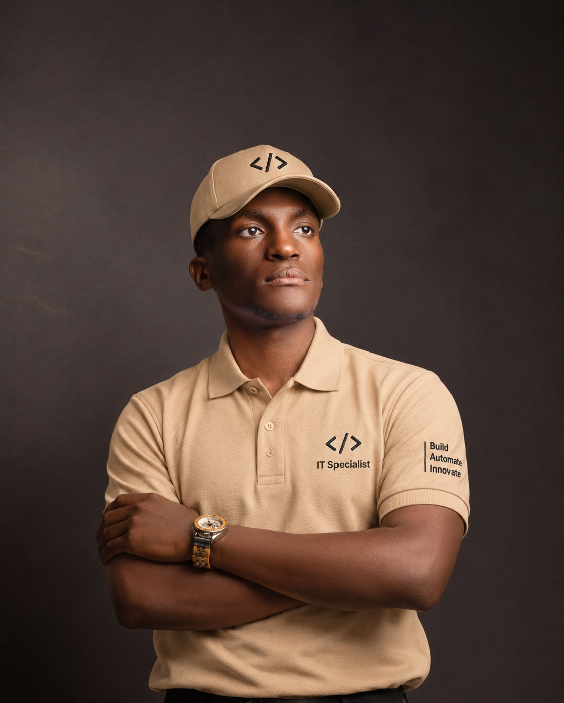

Hello, I'm
Ayesiga Abel
Securing infrastructure, enforcing practical controls, and keeping business systems running reliably
Information Systems and Technology graduate (Security major) from Makerere University with hands-on experience across network security, IT operations, endpoint management, and governance. Certified ISO 27001 Lead Auditor, FortiGate Operator, and Cisco/CCNA-aligned, based in Uganda.
IT Professional · Cybersecurity · Uganda

Securing
Better
Systems
My Skills
Technical Skills That Keep Systems Running
Practical networking, endpoint protection, and risk / compliance skills grounded in daily operations and industry certifications.
Explore SkillsNetwork & Security
Firewalls, Routing, Switching & Endpoint Protection
- Configure and operate FortiGate firewall rules, policies, and security monitoring
- Troubleshoot routing, switching, and network segmentation issues
- Support endpoint security posture and incident response across managed devices
Governance & Auditing
Compliance, Risk & Control Reviews
- Support risk assessments, policy reviews, and access control verification
- Apply structured investigative and forensic fundamentals when reviewing system events
- Conduct ISO 27001 alignment and IT general control (ITGC) checks
Systems & Operations
Business Applications, Ticketing & Lifecycle Supports
- Resolve operational incidents clearly and reliably for local and distributed users
- Manage device provisioning, inventory tracking, and endpoint lifecycle operations
- Provide functional and user support for SAP Business One workflows
History
My interest in technology started with a simple curiosity about how systems connect, where they fail, and how to keep them secure
a drive that led me to earn my Bachelor of Information Systems and Technology from Makerere University, majoring in Security.
Across roles in IT operations, infrastructure support, and enterprise systems,
I have worked on keeping day-to-day environment
resilient and well governed from supporting SAP Business One users and managing device lifecycles to handling network security,
endpoint protection and compliance checks. Outside core infrastructure, I also explore visual design to sharpen how I present
technical documentation and interfaces.
My Projects
Featured Projects
Practical systems and support builds showing how I structure workflows, data, and reliability.
Retail & Operations Management System
Built a shop-style operational system designed to track transactions,inventory movement, and daily sales records cleanly. Focused on clear role/user workflows, data consistency, and straightforward reporting for day-to-day retail operations.
IT Helpdesk & Ticket Tracking Platform
Built an IT support ticketing system to log incidents, track ticket status, and organize user requests instead of losing track of issues in ad-hoc messages. Structured around clear ticket lifecycle states, user accountability, and faster resolution tracking.